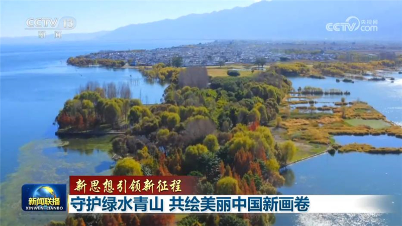
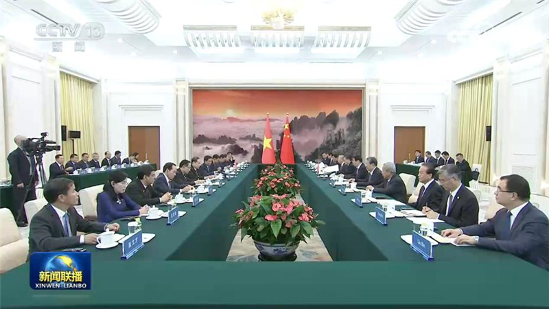
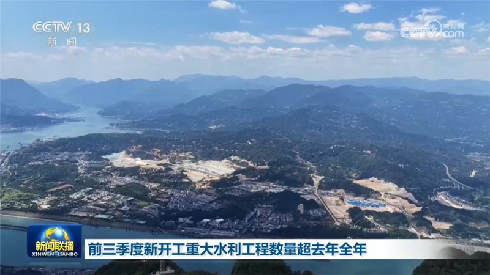
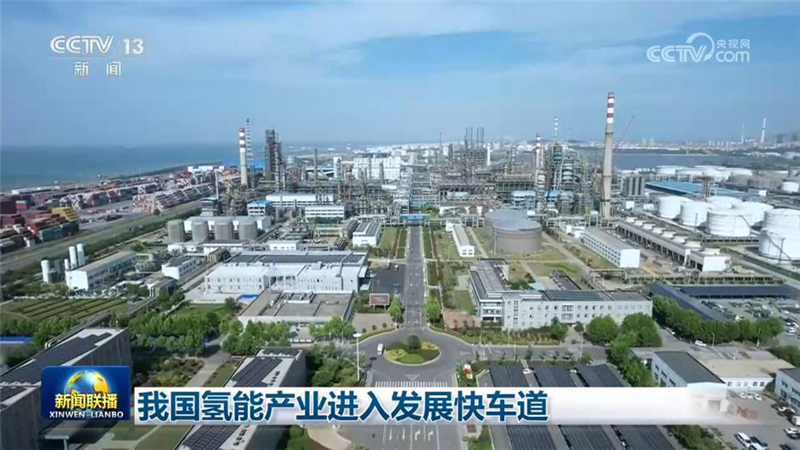
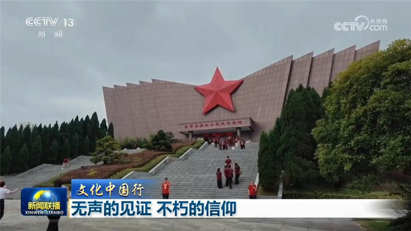
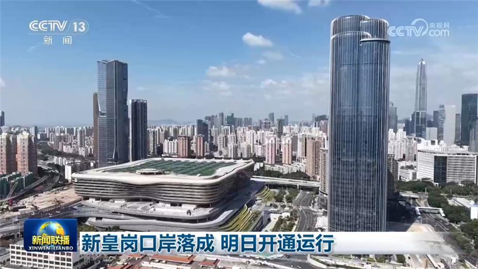
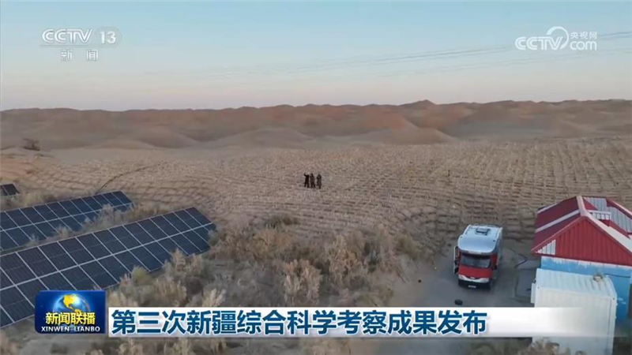
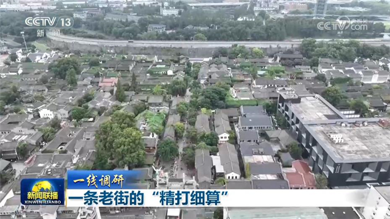
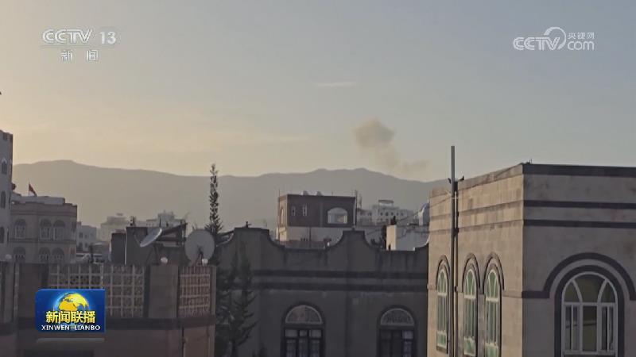
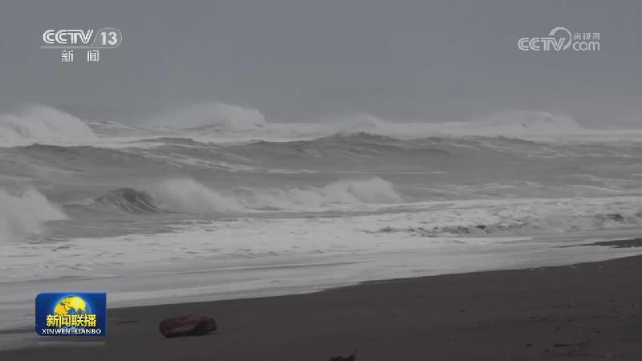

01

【新思想引领新征程】守护绿水青山 共绘美丽中国新画卷
习近平总书记指出，要坚持以高水平保护支撑高质量发展，筑牢国家生态安全屏障。“十五五”开局之年，各地坚持以习近平生态文明思想为指引，统筹推进山水林田湖草沙一体化保护和系统治理，不断绘就美丽中国新画卷。


习近平总书记指出，要坚持以高水平保护支撑高质量发展，筑牢国家生态安全屏障。“十五五”开局之年，各地坚持以习近平生态文明思想为指引，统筹推进山水林田湖草沙一体化保护和系统治理，不断绘就美丽中国新画卷。

全国政协主席王沪宁11日在京会见越南国会主席陈青敏。王沪宁表示，近年来，习近平总书记、国家主席同苏林总书记、国家主席保持密切战略沟通，引领中越关系在世界百年变局中破浪前行。中方愿同越方遵循两党两国最高领导人战略指引，按照“六个更”总体目标，高质量推进各领域互利合作，推进中越命运共同体建设。中国全国政协愿同越方深化交流合作，为推动各自现代化事业作出贡献。
中国物流与采购联合会今天（10月11日）发布，9月份中国物流业景气指数为51.5%，环比回升0.6个百分点，连续5个月处于扩张区间；新订单指数回升0.4个百分点，连续7个月回升，供需市场适配性持续增强。

记者从水利部了解到，今年以来，国家水网建设加速推进，前三季度新开工重大水利工程数量超过去年全年。

今年以来，我国氢能产业发展全面提速。从生产供应到运输存储，再到场景应用，氢能正成为推动我国能源绿色低碳转型的重要力量。

今年是中国工农红军长征胜利90周年。回望长征路，一件件珍贵藏品，一处处红色遗迹，无声记录着红军将士向死而生的壮烈征程。今天（10月11日）的《文化中国行》，让我们透过这些无声的见证，感悟革命先烈革命理想高于天、为救国救民不怕流血牺牲的不朽信仰，走好新时代的长征路。

今天（10月11日）上午，历时七年升级改造，连接深圳、香港两地的新皇岗口岸落成，将于明天正式开通运行，为旅客和客运车辆提供24小时通关服务。

10月10日，第三次新疆综合科学考察成果在乌鲁木齐发布。本次科考针对新疆水资源、生态环境、土地农业、生物多样性与生物资源等领域开展综合调查研究。最新成果显示，新疆水资源量持续增加，近30年河川年均径流量较前40年增加约100亿立方米，湖泊湿地面积扩大约三分之一。……

最近一段时间，一条六百多年历史的老街成了南京人气最旺的地点之一。老街区要商业焕新，如何破解店铺同质化难题，把人气转化为实实在在的消费？来看记者的一线调研。
眼下，大江南北秋意渐浓。人们在斑斓的秋色当中共赏秋韵，带动文旅消费市场持续火热。
我国进一步加强汽车产品安全管理

根据沙特阿拉伯民航总局和沙特主导的多国联军今天（10月11日）发表的声明，位于沙特首都利雅得的哈立德国王国际机场10日遭到也门胡塞武装袭击，目前已造成12人死亡、309人受伤，伤亡者包括旅客和机场工作人员，机场暂停运营。多国联军称，将对袭击予以坚决回应。美国方面称，死者中有一名美国公民，美方可能会加入沙特对也门胡塞武装的军事行动，但尚未作出决定。

俄部分解禁柴油出口 乌呼吁对俄施压